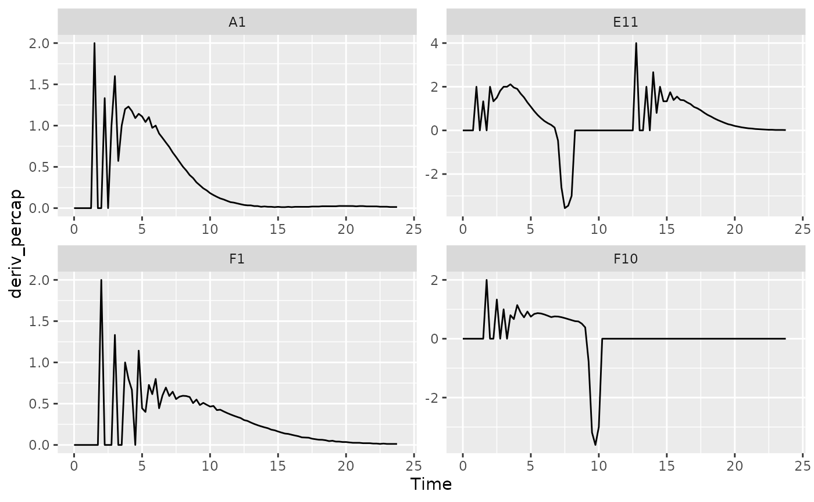

Workflow
- Introduction
- Importing and transforming data
- Incorporating design information
- Pre-processing and plotting your data
- Processing your data
- Analyzing your data
- Statistics, merging other data, and other resources
If you haven’t already, load the necessary packages.
library(gcplyr)
#> ##
#> ## gcplyr (Version 0.12.1, Build Date: 2023-01-22)
#> ## See http://github.com/mikeblazanin/gcplyr for additional documentation
#> ## Please cite software as:
#> ## Blazanin, Michael. 2023. 'gcplyr: manipulate and analyze growth
#> ## curve data.' R package version 0.12.1
#> ##
library(dplyr)
#>
#> Attaching package: 'dplyr'
#> The following objects are masked from 'package:stats':
#>
#> filter, lag
#> The following objects are masked from 'package:base':
#>
#> intersect, setdiff, setequal, union
library(ggplot2)
#This code was explained in sections 2, 3, and 4
#Here we're re-running it so it's available for us to work with
example_tidydata <- trans_wide_to_tidy(example_widedata,
id_cols = "Time")
example_design <- make_design(
pattern_split = ",", nrows = 8, ncols = 12,
"Bacteria_strain" = make_designpattern(
values = paste("Strain", 1:48),
rows = 1:8, cols = 1:6,
pattern = 1:48,
byrow = TRUE),
"Bacteria_strain" = make_designpattern(
values = paste("Strain", 1:48),
rows = 1:8, cols = 7:12,
pattern = 1:48,
byrow = TRUE),
"Phage" = make_designpattern(
values = c("No Phage"),
rows = 1:8, cols = 1:6,
pattern = "1"),
"Phage" = make_designpattern(
values = c("Phage Added"),
rows = 1:8, cols = 7:12,
pattern = "1"))
ex_dat_mrg <- merge_dfs(example_tidydata, example_design)
#> Joining, by = "Well"
ex_dat_mrg$Well <-
factor(ex_dat_mrg$Well,
levels = paste(rep(LETTERS[1:8], each = 12), 1:12, sep = ""))How to process and analyze your data
With your data and design information pre-processed, your dataset is now organized in a way that’s easy to export and analyze. It is also at this point that the next steps for what you can do diversify into many options.
Broadly speaking, there are two main approaches to analyzing growth curves data:
- directly quantify attributes of the growth dynamics
- fit the growth dynamics with a mathematical model, then extract parameters from the fitted model
The remaining functions of gcplyr can facilitate
analyses following the first approach: directly quantifying attributes
of the observed dynamics. If you’re interested in exploring
model-fitting approaches, which can provide enormous analytical power,
check out the [Other growth curve analysis packages]
section. At this point, since the data is now well-organized, advanced
users may also decide they want to write their own custom analyses (in
lieu of, or alongside, gcplyr-based and/or fitting-based
analyses).
So, how do we directly quantify attributes of growth curves? First,
we may need to carry out smoothing of our data to reduce the effect of
noise. Then, we typically need to calculate derivatives of our
(smoothed) data. The (smoothed) density and (smoothed) derivatives will
be what we analyze to identify features of our growth curves.
gcplyr has a number of functions that facilitate these
steps.
However, unlike the import, transformation, and merging steps we’ve done so far, different projects may require different analyses, and not all users will have the same analysis steps. The Smoothing, Calculating Derivatives and Analyzing sections of this document, therefore, are written to highlight the functions available and provide examples of common analyses that you may want to run, rather than prescribing a set of analysis steps that everyone must do.
Before we dig into processing and analyzing our data, we first need
to familiarize ourselves with the dplyr package and its
functions group_by and mutate. Why? Because
the upcoming gcplyr processing functions are best
used within dplyr::mutate. If
you’re already familiar with dplyr, feel free to skip this
primer. If you’re not familiar yet, don’t worry! This section
provides a primer that will teach you all you need to know on using
group_by and mutate with gcplyr
functions.
A brief primer on dplyr
The R package dplyr provides a “grammar of
data manipulation” that is useful for a broad array of data analysis
tasks (in fact, dplyr is the direct inspiration for the
name of this package!) For our purposes right now, we’re going to focus
on two particular functions: group_by and
mutate.
The mutate function in dplyr allows users
to easily create new columns in their data.frame’s. For us,
we’re going to use mutate to create columns with our
smoothed data and the derivatives we calculate. However, we want to make
sure that smoothing and derivative-calculating are done on each
unique well independently. In order to do that, we’re first going to use
the group_by function, which allows users to group the rows
of their data.frame’s into groups that mutate
will then treat independently.
For growth curves, this means we will:
-
group_byour data so that every unique well is a group -
mutateto create new columns with our smoothed data and calculated derivatives
Let’s walk through a simple example
For group_by, we need to specify the
data.frame to be grouped, and then we want to list all the
columns needed to identify each unique well in our dataset. Typically,
this includes all of our design columns along with the plate name and
well name. Make sure you’re not grouping by Time, Absorbance,
or anything else that varies within a well, since if you do
dplyr will group timepoints within a well separately.
ex_dat_mrg <- group_by(ex_dat_mrg, Well, Bacteria_strain, Phage)
head(ex_dat_mrg)
#> # A tibble: 6 × 5
#> # Groups: Well, Bacteria_strain, Phage [6]
#> Time Well Measurements Bacteria_strain Phage
#> <dbl> <fct> <dbl> <chr> <chr>
#> 1 0 A1 0.003 Strain 1 No Phage
#> 2 0 B1 0.001 Strain 7 No Phage
#> 3 0 C1 0.002 Strain 13 No Phage
#> 4 0 D1 0.002 Strain 19 No Phage
#> 5 0 E1 0.002 Strain 25 No Phage
#> 6 0 F1 0.001 Strain 31 No PhageNotice that this hasn’t changed anything about our
data.frame, but R now knows what the groups
are. Now any calculations will be carried out on each unique well
independently.
To use mutate, we simply have to specify:
- the name of the variable we want results saved to
- the function that calculates the new column
Note that the function has to return a vector that is as long as the number of data points in the group.
For a simple example, in the code below we’ve simply added one to the
Measurements values and saved it in a column named
Measurements_plus1:
ex_dat_mrg <-
mutate(ex_dat_mrg,
Measurements_plus1 = Measurements+1)
head(ex_dat_mrg)
#> # A tibble: 6 × 6
#> # Groups: Well, Bacteria_strain, Phage [6]
#> Time Well Measurements Bacteria_strain Phage Measurements_plus1
#> <dbl> <fct> <dbl> <chr> <chr> <dbl>
#> 1 0 A1 0.003 Strain 1 No Phage 1.00
#> 2 0 B1 0.001 Strain 7 No Phage 1.00
#> 3 0 C1 0.002 Strain 13 No Phage 1.00
#> 4 0 D1 0.002 Strain 19 No Phage 1.00
#> 5 0 E1 0.002 Strain 25 No Phage 1.00
#> 6 0 F1 0.001 Strain 31 No Phage 1.00If you want additional columns, you simply add them to the
mutate. For instance, if we also want a column with the
Measurements plus two, we just add that as a second
argument:
ex_dat_mrg <-
mutate(ex_dat_mrg,
Measurements_plus1 = Measurements+1,
Measurements_plus2 = Measurements+2)
head(ex_dat_mrg)
#> # A tibble: 6 × 7
#> # Groups: Well, Bacteria_strain, Phage [6]
#> Time Well Measurements Bacteria_strain Phage Measurements_plus1 Measure…¹
#> <dbl> <fct> <dbl> <chr> <chr> <dbl> <dbl>
#> 1 0 A1 0.003 Strain 1 No Phage 1.00 2.00
#> 2 0 B1 0.001 Strain 7 No Phage 1.00 2.00
#> 3 0 C1 0.002 Strain 13 No Phage 1.00 2.00
#> 4 0 D1 0.002 Strain 19 No Phage 1.00 2.00
#> 5 0 E1 0.002 Strain 25 No Phage 1.00 2.00
#> 6 0 F1 0.001 Strain 31 No Phage 1.00 2.00
#> # … with abbreviated variable name ¹Measurements_plus2This is a rather simple example, but in the next sections I show how
we can use mutate with smooth_data and
calc_deriv to create new columns containing smoothed data
and derivatives. If you want to learn more, dplyr has
extensive documentation and examples of its own online. Feel free to
explore them as desired, but this primer and the coming example should
be sufficient to use the gcplyr processing functions, which
(as a reminder) are best used within mutate.
Processing data: smoothing
Oftentimes, growth curve data produced by a plate reader will have
some noise it it. While sometimes this noise does not hinder analyses,
sometimes it’s necessary to smooth the data in each well for analyses to
succeed. gcplyr has a smooth_data function
that can carry out such smoothing. Generally you should carry out as
little smoothing as is necessary for your analyses to work. That
means that right now you should skip this section and
go on to the Calculating
Derivatives section, returning to this smoothing section if
your derivatives are too noisy to analyze.
If you have returned in need of learning to use
smooth_data, let’s start by taking a look at a few wells
from our example data, which have some noise.
#Here we've chosen four wells that, from our previous plot, seem
# representative of the overall diversity of dynamics
#In your own code, you should visualize all your data
sample_wells <- c("A1", "F1", "F10", "E11")
#Plot with a linear y-axis
ggplot(data = dplyr::filter(ex_dat_mrg, Well %in% sample_wells),
aes(x = Time, y = Measurements)) +
geom_point() +
facet_wrap(~Well)
#Plot with a log y-axis
ggplot(data = dplyr::filter(ex_dat_mrg, Well %in% sample_wells),
aes(x = Time, y = Measurements)) +
geom_point() +
facet_wrap(~Well) +
scale_y_continuous(trans = "log10")
#> Warning: Transformation introduced infinite values in continuous y-axisPlotting our data with a log scale for the y-axis is particularly useful for growth curves because exponential growth is a straight line when plotted on a log scale.
From the log plot especially we can see that at low densities there’s a lot of noise relative to the density. In fact, this is a common occurrence: at low densities, random noise tends to have a much larger effect than at high densities. Unfortunately, calculating derivatives (especially the per-capita derivative) is very sensitive to such noise, so let’s smooth our data.
smooth_data has four different smoothing algorithms to
choose from: moving-average, moving-median,
loess, and gam.
-
moving-averageis a simple smoothing algorithm that primarily acts to reduce the effects of outliers on the data -
moving-medianis another simple smoothing algorithm that primarily acts to reduce the effects of outliers on the data -
loessis a spline-fitting approach that uses polynomial-like curves, which produces curves with smoothly changing derivatives, but can in some cases create curvature artifacts not present in the original data -
gamis also spline-fitting approach that uses polynomial-like curves, which produces curves with smoothly changing derivatives, but can in some cases create curvature artifacts not present in the original data
Additionally, all four smoothing algorithms have a tuning parameter that controls how “smoothed” the data are. For whichever smoothing method you’re using, you should plot smoothing with multiple different tuning parameter values, then choose the value that smooths the data as little as is necessary to reduce noise. Make sure to plot the smoothing for every well in your data, so that you’re choosing the best setting for all your data and not just one well.
Smoothing data is a step that alters the values you will analyze. Because of that, and because there are so many options for how to smooth your data, it is a step that can be rife with pitfalls. I recommend starting with the simplest and least “smoothed” smoothing, plotting your results, and only increasing your smoothing as much as is needed to enable downstream analyses. Additionally, when sharing your findings, it’s important to be transparent by sharing the raw data and smoothing methods, rather than treating the smoothed data as your source.
To use smooth_data, pass your x and y values, your
method of choice, and any additional arguments needed for the method. It
will return a vector of your smoothed y values.
Since we only want to smooth within each unique well, we’ll first
group_by our data:
ex_dat_mrg <- group_by(ex_dat_mrg, Well, Bacteria_strain, Phage)Smoothing with moving-average
For moving-average, the tuning parameter is
window_width_n, which specifies how many data points wide
the moving window used to calculate the average is. Specifying the
window_width_n is required, and larger values will be more
“smoothed”. Here, we’ll show moving averages with windows that are 3, 7,
and 11 data points wide (because the window is centered on each data
point, it must be an odd number of data points wide). Note that
moving-average returns NA for the
window_width_n/2 points at the start and end of your
data.
ex_dat_mrg <-
mutate(ex_dat_mrg,
smoothed3 = smooth_data(x = Time, y = Measurements,
sm_method = "moving-average", window_width_n = 3),
smoothed7 = smooth_data(x = Time, y = Measurements,
sm_method = "moving-average", window_width_n = 7),
smoothed11 = smooth_data(x = Time, y = Measurements,
sm_method = "moving-average", window_width_n = 11))
#What does the smoothed data look like compared to the noisy original?
#Lighter lines are wider window_width_n's and more "smoothed"
ggplot(data = dplyr::filter(ex_dat_mrg, Well %in% sample_wells),
aes(x = Time)) +
geom_point(aes(y = Measurements)) +
geom_line(aes(y = smoothed3), color = "gray20") +
geom_line(aes(y = smoothed7), color = "gray45") +
geom_line(aes(y = smoothed11), color = "gray65") +
facet_wrap(~Well) +
scale_y_continuous(trans = "log10")
#> Warning: Transformation introduced infinite values in continuous y-axis
#> Transformation introduced infinite values in continuous y-axis
#> Warning: Removed 2 rows containing missing values (`geom_line()`).
#> Warning: Removed 6 rows containing missing values (`geom_line()`).
#> Warning: Removed 10 rows containing missing values (`geom_line()`).Here we can see that moving-average has helped reduce
the effects of some of that early noise. However, with
window_width_n = 11 (the lightest line), the smoothing has
started biasing our medium-density data points to be higher than they
actually are. Based on this, we’d probably want to use a
window_width_n less than 11. Unfortunately, with smaller
window_width_n our early data is still being affected by
that early noise, so we should explore other smoothing methods, or try
combining multiple smoothing methods.
Smoothing with moving-median
For moving-median, the tuning parameter is also
window_width_n, which specifies how many data points wide
the moving window used to calculate the average is. Specifying the
window_width_n is required, and larger values will be more
“smoothed”. Here, we’ll show moving averages with windows that are 3, 7,
and 11 data points wide (because the window is centered on each data
point, it must be an odd number of data points wide). Note that
moving-median returns NA for the
window_width_n/2 points at the start and end of your
data.
ex_dat_mrg <-
mutate(ex_dat_mrg,
smoothed3 =
smooth_data(x = Time, y = Measurements,
sm_method = "moving-median", window_width_n = 3),
smoothed7 =
smooth_data(x = Time, y = Measurements,
sm_method = "moving-median", window_width_n = 7),
smoothed11 =
smooth_data(x = Time, y = Measurements,
sm_method = "moving-median", window_width_n = 11))
#What does the smoothed data look like compared to the noisy original?
#Lighter lines are wider window_width_n's and more "smoothed"
ggplot(data = dplyr::filter(ex_dat_mrg, Well %in% sample_wells),
aes(x = Time)) +
geom_point(aes(y = Measurements)) +
geom_line(aes(y = smoothed3), color = "gray20") +
geom_line(aes(y = smoothed7), color = "gray45") +
geom_line(aes(y = smoothed11), color = "gray65") +
facet_wrap(~Well) +
scale_y_continuous(trans = "log10")
#> Warning: Transformation introduced infinite values in continuous y-axis
#> Transformation introduced infinite values in continuous y-axis
#> Transformation introduced infinite values in continuous y-axis
#> Transformation introduced infinite values in continuous y-axis
#> Warning: Removed 2 rows containing missing values (`geom_line()`).
#> Warning: Removed 6 rows containing missing values (`geom_line()`).
#> Warning: Removed 10 rows containing missing values (`geom_line()`).
Here we can see that moving-median has really excluded
that low-density noise, even with the smallest
window_width_n = 3. Additionally,
moving-median did not bias our larger data hardly at all,
except with the widest window_width_n. However, it has
produced a smoothed density that is fairly “jumpy”, something that wider
window_width_n did not fix. This is common with
moving-median, so often you may need to try other smoothing
methods or combining moving-median with other methods.
Smoothing with LOESS
For loess, the tuning parameter is the span
argument. loess works by doing fits on subset windows of
the data centered at each data point. These fits can be linear
(degree = 1) or polynomial (typically
degree = 2). span is the width of the window,
as a fraction of all data points. For instance, with the default
span of 0.75, 75% of the data points are included in each
window. Thus, span values typically are between 0 and 1 (although see
?loess for use of span values greater than 1),
and larger values are more “smoothed”. Here, we’ll show
loess smoothing with spans of 0.1, 0.2, and 0.5 and
degree = 1.
ex_dat_mrg <-
mutate(ex_dat_mrg,
smoothed1 = smooth_data(x = Time, y = Measurements,
sm_method = "loess", span = .1, degree = 1),
smoothed2 = smooth_data(x = Time, y = Measurements,
sm_method = "loess", span = .2, degree = 1),
smoothed5 = smooth_data(x = Time, y = Measurements,
sm_method = "loess", span = .5, degree = 1))
#What does the smoothed data look like compared to the noisy original?
#Lighter lines are larger span's and more "smoothed"
ggplot(data = dplyr::filter(ex_dat_mrg, Well %in% sample_wells),
aes(x = Time)) +
geom_point(aes(y = Measurements)) +
geom_line(aes(y = smoothed1), color = "gray20") +
geom_line(aes(y = smoothed2), color = "gray45") +
geom_line(aes(y = smoothed5), color = "gray65") +
facet_wrap(~Well) +
scale_y_continuous(trans = "log10")
#> Warning: Transformation introduced infinite values in continuous y-axis
#> Warning in self$trans$transform(x): NaNs produced
#> Warning: Transformation introduced infinite values in continuous y-axis
#> Warning: Removed 9 rows containing missing values (`geom_line()`).
Here we can see that loess with smaller spans (darker
lines) have smoothed the data somewhat but are still sensitive to
outliers. However, loess with a larger span (lightest line)
has introduced significant bias. To fix this, we might explore other
smoothing methods, or combining loess with other smoothing
methods.
Smoothing with GAM
For gam, the primary tuning parameter is the
k argument. gam works by doing fits on subsets
of the data and linking these fits together. k determines
how many link points (“knots”) it can use. If not specified, the default
k value for smoothing a time series is 10, with
smaller values being more “smoothed” (note this is
opposite the trend with other smoothing methods). However,
unlike earlier methods, k values that are too large
are also problematic, as they will tend to ‘overfit’ the data.
k cannot be larger than the number of data points, and
should usually be substantially smaller than that. Also note that
gam can sometimes create artifacts,
especially oscillations in your density and derivatives. You should
check that gam is not doing so before carrying on with your
analyses. Here, we’ll show gam smoothing with
k values of 5, 10, and 20.
ex_dat_mrg <-
mutate(ex_dat_mrg,
smoothed20 = smooth_data(x = Time, y = Measurements,
sm_method = "gam", k = 20),
smoothed10 = smooth_data(x = Time, y = Measurements,
sm_method = "gam", k = 10),
smoothed5 = smooth_data(x = Time, y = Measurements,
sm_method = "gam", k = 5))
#What does the smoothed data look like compared to the noisy original?
#Lighter lines are smaller k and more "smoothed"
ggplot(data = dplyr::filter(ex_dat_mrg, Well %in% sample_wells),
aes(x = Time)) +
geom_point(aes(y = Measurements)) +
geom_line(aes(y = smoothed20), color = "gray20") +
geom_line(aes(y = smoothed10), color = "gray45") +
geom_line(aes(y = smoothed5), color = "gray65") +
facet_wrap(~Well) +
scale_y_continuous(trans = "log10")
#> Warning: Transformation introduced infinite values in continuous y-axis
#> Warning in self$trans$transform(x): NaNs produced
#> Warning: Transformation introduced infinite values in continuous y-axis
#> Warning in self$trans$transform(x): NaNs produced
#> Warning: Transformation introduced infinite values in continuous y-axis
#> Warning in self$trans$transform(x): NaNs produced
#> Warning: Transformation introduced infinite values in continuous y-axis
Here we can see that gam does alright when working with
the no phage-added wells (A1 and F1): higher k values
(darkest line) have smoothed the data but are still sensitive to those
early outliers, while lower k values (lighter lines) have
introduced significant bias. However, gam is struggling
when phage have been added (E11 and F10). Across all the k
values it has added many fluctuations and often dips into values of 0 or
lower (plotted here as breaks in the line, since the log of numbers
<= 0 are undefined). To fix this, we might explore other smoothing
methods or combining gam with other smoothing methods.
Combining multiple smoothing methods
Often, combining multiple smoothing methods can provide improved
results. For instance, moving-median is particularly good
at removing outliers, but not very good at producing continuously smooth
data. In contrast, moving-average, loess, and
gam work better at producing continuously smooth data, but
aren’t as good at removing outliers. Here’s an example using the
strengths of both moving-median and
moving-average. (Note that earlier columns created in
mutate are available during creation of later columns, so
both can be done in one step):
ex_dat_mrg <-
mutate(ex_dat_mrg,
smoothed_med3 =
smooth_data(x = Time, y = Measurements,
sm_method = "moving-median", window_width_n = 3),
#Note that for the second round, we're using the
#first smoothing as the input y
smoothed =
smooth_data(x = Time, y = smoothed_med3,
sm_method = "moving-average", window_width_n = 3))
#What does the smoothed data look like compared to the noisy original?
#The first round of smoothing with moving-median is plotted in lighter colors
#The second round of smoothing with moving-average is plotted in darker colors
ggplot(data = dplyr::filter(ex_dat_mrg, Well %in% sample_wells),
aes(x = Time)) +
geom_point(aes(y = Measurements)) +
geom_line(aes(y = smoothed_med3), color = "gray20") +
geom_line(aes(y = smoothed), color = "gray65") +
facet_wrap(~Well) +
scale_y_continuous(trans = "log10")
#> Warning: Transformation introduced infinite values in continuous y-axis
#> Transformation introduced infinite values in continuous y-axis
#> Transformation introduced infinite values in continuous y-axis
#> Warning: Removed 2 rows containing missing values (`geom_line()`).
#> Warning: Removed 4 rows containing missing values (`geom_line()`).
Here we can see that the combination of minimal
moving-median and moving-average smoothing has
produced a curve that has most of the noise removed with minimal
introduction of bias. (Note that the first and last 2 data points are
now NA because of the smoothing)
Processing data: calculating derivatives
In many cases, identifying features of a growth curve requires
looking not only at the absorbance data over time, but the slope of the
absorbance data over time. gcplyr includes a
calc_deriv function that can be used to calculate the
empirical derivative (slope) of absorbance data over time.
If you’ve previously smoothed your absorbance data, remember to use those smoothed values rather than the original values!
A simple derivative
To calculate a simple derivative (the slope of our original data)
using calc_deriv, we simply have to provide the x and y
values. Note that this is not the growth rate of the
cells, but rather is a measure of how quickly the whole population was
growing at each time point. This is useful for identifying events like
population declines, or multiple rounds of growth.
ex_dat_mrg <- mutate(ex_dat_mrg,
deriv = calc_deriv(x = Time, y = smoothed))
#Now let's plot the derivative
ggplot(data = dplyr::filter(ex_dat_mrg, Well %in% sample_wells),
aes(x = Time, y = deriv)) +
geom_line() +
facet_wrap(~Well, scales = "free")
#> Warning: Removed 5 rows containing missing values (`geom_line()`).
Here we can clearly see when the slope of the total population was
increasing the fastest, and when it declines in the phage-added wells.
But we can also see something surprising in Well A1 that may not have
been immediately apparent visually: there is a second, slower, burst of
growth later on. Such a pattern is common in bacterial growth curves and
is called diauxic growth. Additionally, we can see in Well E11
when the bacteria start to grow again following near-extinction by
phages, presumably after evolving resistance to the phage. (Note that
the last value in the time series always becomes NA with
calc_deriv under default settings)
Per-capita derivative
If we want to calculate the growth rate of the cells, we need to use
calc_deriv to return the per-capita
derivative. Just as before, provide the x and y values, but now set
percapita = TRUE. Note that in this case, you are required
to specify a blank value, i.e. the value of your
Measurements that corresponds to a population density of 0.
If your data have already been normalized, simply add
blank = 0.
ex_dat_mrg <- mutate(ex_dat_mrg,
deriv_percap = calc_deriv(x = Time, y = smoothed,
percapita = TRUE, blank = 0))
#Now let's plot the per-capita derivative
ggplot(data = dplyr::filter(ex_dat_mrg, Well %in% sample_wells),
aes(x = Time, y = deriv_percap)) +
geom_line() +
facet_wrap(~Well, scales = "free")
#> Warning: Removed 5 rows containing missing values (`geom_line()`).Here we can see that, in Well A1, the per-capita growth rate peaked much earlier in the time-series than might appear from the density dynamics or non per-capita derivative. We can also see that there was clearly a lag phase at the beginning before the bacteria started growing rapidly.
However, the other wells seem to have a lot of noise obscuring their per-capita growth rates. What happened? Why hasn’t our smoothing been sufficient? As I explore later, per-capita growth rates can be strongly affected by even small noise at very low densities, something that can be excluded simply by only analyzing per-capita growth when densities are above some minimum value.
Changing the derivative units
To convert your x-axis (time) units in your derivative calculations
to a different unit, use the x_scale argument. Simply
specify the ratio of your x units to the desired units. For instance, in
our example data x is the number of seconds since
the growth curve began. What if we wanted growth rate in
per-hour? There are 3600 seconds in an hour, so we set
x_scale = 3600
ex_dat_mrg <-
mutate(ex_dat_mrg,
deriv_percap_hr = calc_deriv(x = Time, y = smoothed,
percapita = TRUE, blank = 0,
x_scale = 3600))
#Now let's plot the derivative in units of Abs/hour
ggplot(data = dplyr::filter(ex_dat_mrg, Well %in% sample_wells),
aes(x = Time, y = deriv_percap_hr)) +
geom_line() +
facet_wrap(~Well, scales = "free")
#> Warning: Removed 5 rows containing missing values (`geom_line()`).Now we can see the bacterial growth rate in more-understandable units: peak growth rates are often around 1-2 times/hour (when ignoring the points that seem likely to be noise).